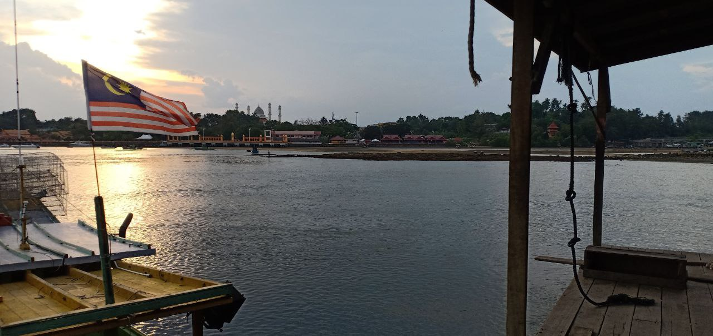
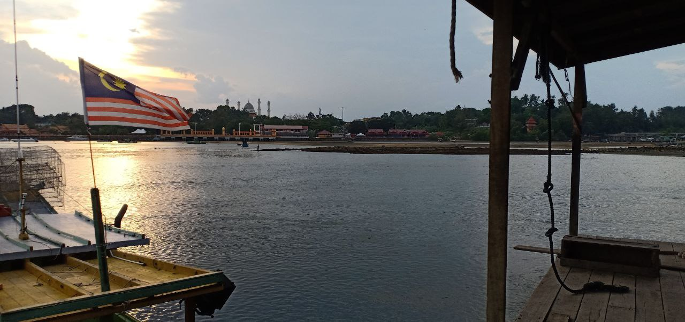

MoNoWoRLD
MoNoWoRLD 
Kampung Rhu Dua
My hometown is Kampung Rhu Dua, a village located in Marang, in the state of Terengganu Darul Iman, which is a state in eastern Malaysia, and which borders Kelantan in the north, Pahang in the west and south, and the South China Sea in the east. Kampung Rhu Dua is a traditional fishing village located in the direction of Marang, Terengganu. This village has a very interesting geographical position facing the South China Sea which is opposite an island namely Kapas Island and Gemia Island. The panorama of this village is very interesting and many foreign tourists come to enjoy the panorama of its clean beach. With a population capacity of approximately 1,200 people and a strong culture of consensus has greatly contributed to the progress of this village since the beginning.


 
